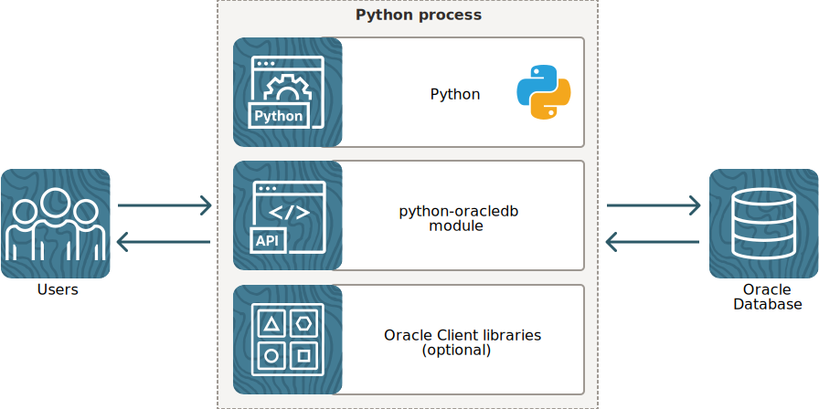

This tutorial is a guide on using Python with Oracle Database. It contains both beginner and advanced materials. Choose the content that interests you and your skill level. The tutorial has scripts to run and modify, and has suggested solutions.
Python is a popular general purpose dynamic scripting language. The python-oracledb driver provides access to Oracle Database from Python scripts. It is the successor to the obsolete cx_Oracle interface.
If you are new to Python, review the Appendix: Python Primer to gain an understanding of the language.
When you have finished this tutorial, we recommend reviewing the python-oracledb documentation.
The original copy of these instructions that you are reading is here.
By default, python-oracledb runs in a "Thin" mode, which connects directly to Oracle Database. This mode does not need Oracle Client libraries. However, some additional features are available when python-oracledb uses them. Python-oracledb applications that load the Oracle Client libraries via an application script runtime option are said to be in "Thick" mode. Both modes have comprehensive functionality supporting the Python Database API v2.0 Specification, allowing python-oracledb to be use by popular frameworks, ORMs, and other libraries.

The database can be on the same machine as Python, or it can be remote.
This tutorial assumes you have DBA access to Oracle Database. This is needed to grant some privileges and roles.
Some examples require the latest version of Oracle Database, but most will work with older database versions.
If you need a database, you can install Oracle Database Free on Linux or Windows from oracle-database-software-downloads.html#db_free.
Alternatively use a container from container-registry.oracle.com:
podman run -p 1521:1521 --name free -e ORACLE_PWD=mysecret
container-registry.oracle.com/database/free:latest
Variants of the container can also be found at github.com/gvenzl/oci-oracle-free/blob/main
When the locally installed Free database or container is running, the privileged user name is "SYSTEM" and the connection string is "localhost/freepdb1". For examples that additionally need to connect to the root container database (not to be confused with a database running in a Docker container), the root connection string is "localhost/free".
Install Python 3 if not already available. It can be obtained from your operating system package library or from python.org. Use Python 3.9 or later.
Install python-oracledb with a command like:
python -m pip install oracledb --upgrade
or
python3 -m pip install oracledb --upgrade
The Python scripts used in this example are in the python-oracledb GitHub repository.
Download a zip file of the repository from here and unzip it. Alternatively you can use 'git' to clone the repository:
git clone --recursive https://github.com/oracle/python-oracledb.git
The samples/tutorial directory has scripts to run and
modify. The samples/tutorial/solutions directory has
scripts with suggested code changes. The
samples/tutorial/sql directory has all the SQL scripts
used by the Python files to create database tables and other
objects.
Review db_config_sys.py in the tutorial
directory. This file is included in other Python files for creating and
dropping the tutorial user.
Edit db_config_sys.py and change the default
values to match the system connection information for your environment.
Alternatively, you can set the given environment variables in your
terminal window. For example, the default username is "SYSTEM"
unless the environment variable "PYTHON_SYSUSER" contains a
different username. The default system connection string is for the
"freepdb1" database service on the same machine as Python. In
Python Database API terminology, the connection string parameter is
called the "data source name", or "dsn". Using environment variables
is convenient because you will not be asked to re-enter the password
when you run scripts. The file db_config_sys.py looks
like:
user = os.environ.get("PYTHON_SYSUSER", "SYSTEM")
dsn = os.environ.get("PYTHON_CONNECT_STRING", "localhost/freepdb1")
pw = os.environ.get("PYTHON_SYSPASSWORD")
if pw is None:
pw = getpass.getpass("Enter password for %s: " % user)
Substitute the admininstator values for your environment. If you are using Oracle Autonomous Database (ADB), use the ADMIN user instead of SYSTEM. The tutorial instructions may need adjusting, depending on how you have set up your environment.
If you have an existing user, you may be able to use it for most examples (though some examples may require extra permissions).
If you need to create a new user for this tutorial, review the
grants created in samples/tutorial/sql/create_user.sql by
opening it in your favorite text editor. Then open a terminal window
and run create_user.py to execute the
create_user.sql script and create the sample user. This
tutorial uses the name pythondemo by default:
python create_user.py
The example above connects as the SYSTEM (or ADMIN for
ADB) user using db_config_sys file discussed in
the earlier section. The connection string is
"localhost/freepdb1", meaning use the database service
"freepdb1" running on localhost (the computer you are running
your Python scripts on).
If it runs successfully, you will see something similar below:
Enter password for SYSTEM: Enter password for pythondemo: Creating user... SQL File Name: python-oracledb\samples\tutorial\sql\create_user.sql Done.
The new user pythondemo is created.
When the tutorial is finished, ensure that all the database sessions
connected to the tutorial user pythondemo are closed and then
run python drop_user.py to remove the tutorial user.
Once you have a database user, then you can create the key tutorial
tables and database objects for the tutorial by running
setup_tutorial.py (the environment setup file), using your
values for the tutorial username, password and connection string:
python setup_tutorial.py
On successful completion of the run, You will see something like:
Setting up the sample tables and other DB objects for the tutorial... SQL File Name: python-oracledb/samples/tutorial/sql/setup_tutorial.sql Done.
This will call the setup_tutorial.sql file from
tutorials/sql directory to setup some sample tables and
database objects required for running the examples in the tutorial.
Review db_config.py (Thin mode), and
db_config.sql files in the tutorial and
tutorial/sql directories respectively. These are included
in other Python and SQL files for setting up the database
connection.
Edit db_config.py and change the default values to
match the connection information for your environment. Alternatively,
you can set the given environment variables in your terminal window. For
example, the default username is "pythondemo" unless the
environment variable "PYTHON_USER" contains a different
username. The default connection string is for the 'freepdb1'
database service on the same machine as Python. In Python Database API
terminology, the connection string parameter is called the "data source
name", or "dsn". Using environment variables is convenient because you
will not be asked to re-enter the password when you run scripts:
user = os.environ.get("PYTHON_USER", "pythondemo")
dsn = os.environ.get("PYTHON_CONNECT_STRING", "localhost/freepdb1")
pw = os.environ.get("PYTHON_PASSWORD")
if pw is None:
pw = getpass.getpass("Enter password for %s: " % user)
Also, change the database username and connection string in the SQL
configuration file db_config.sql based on your environment
settings:
-- Default database username def user = "pythondemo" -- Default database connection string def connect_string = "localhost/freepdb1" -- Prompt for the password accept pw char prompt 'Enter database password for &user: ' hide
The tutorial instructions may need adjusting, depending on how you have set up your environment.
You can connect from Python to a local, remote or cloud Oracle Database. Documentation link for further reading: Connecting to Oracle Database.
Review the code contained in connect.py:
import oracledb
import db_config
con = oracledb.connect(user=db_config.user, password=db_config.pw, dsn=db_config.dsn)
print("Database version:", con.version)
The python-oracledb module is imported to provide the API for accessing the Oracle database. Many inbuilt and third-party modules can be included in Python scripts this way.
The username, the password and the connection string that you
configured in the db_config.py module is passed to the
connect() method. By default, Oracle's Easy Connect connection
string syntax is used. It consists of the hostname of your machine,
localhost, and the database service name
freepdb1. (In Python Database API terminology, the connection
string parameter is called the "data source name", or "dsn").
Open a command terminal and change to the tutorial
directory:
cd samples/tutorial
Run the Python script:
python connect.py
The version number of the database should be displayed. An exception is raised if the connection fails. Adjust the username, password, or connection string parameters to invalid values to see the exception.
Python-oracledb also supports other authentication methods such as "token authentication" and "external authentication", which allow connections without needing usernames and passwords to be embedded in the code. With external authentication, access could be enforced by, for example, an Oracle Wallet.
Python uses whitespace to indicate code blocks. It does not use statement terminators, begin/end keywords, or braces.
Note that the sample files use spaces, not tabs.
Open connect.py in an editor. Indent the print statement
with some spaces:
import oracledb
import db_config
con = oracledb.connect(user=db_config.user, password=db_config.pw, dsn=db_config.dsn)
print("Database version:", con.version)
Save the script and run it again:
python connect.py
This raises an exception about the indentation. The number of spaces or tabs must be consistent in each block; otherwise, the Python interpreter will either raise an exception or execute code unexpectedly.
Python may not always be able to identify accidental from deliberate indentation. Check if your indentation is correct before running each example. Make sure to indent all statement blocks equally in the tutorial with spaces (not tabs).
Open query.py in an editor. It looks like:
import oracledb import db_config con = oracledb.connect(user=db_config.user, password=db_config.pw, dsn=db_config.dsn)
Edit the file and add the code shown in bold below:
import oracledb
import db_config
con = oracledb.connect(user=db_config.user, password=db_config.pw, dsn=db_config.dsn)
cur = con.cursor()
cur.execute("select * from dept order by deptno")
res = cur.fetchall()
for row in res:
print(row)
Make sure the print(row) line is indented. This tutorial
uses spaces, not tabs.
The code executes a query and fetches all data.
Save the file and run it:
python query.py
In each loop iteration, a new row is stored in row variable
as a Python "tuple" and is displayed.
Fetching data is described further in Section 3.
Connections and other resources used by python-oracledb will automatically be closed at the end of scope. This is a common programming style that takes care of the correct order of resource closure.
Resources can also be explicitly closed to free up database resources if they are no longer needed. This is strongly recommended in blocks of code that remain active for some time.
Open query.py in an editor and add calls to close the
cursor and connection like:
import oracledb
import db_config
con = oracledb.connect(user=db_config.user, password=db_config.pw, dsn=db_config.dsn)
cur = con.cursor()
cur.execute("select * from dept order by deptno")
res = cur.fetchall()
for row in res:
print(row)
cur.close()
con.close()
Running the script completes without error:
python query.py
If you swap the order of the two close() calls you will see
an error.
Often Python context managers are used to automatically scope resources
and automatically close them. You might encounter Python code that uses
them as with blocks like:
with oracledb.connect(user=db_config.user, password=db_config.pw, dsn=db_config.dsn) as con:
with con.cursor() as cur:
cur.execute("select * from dept order by deptno")
res = cur.fetchall()
for row in res:
print(row)
For ease of editing and getting correct indentation this tutorial doesn't use context managers, but they are recommended.
Review the code contained in versions.py:
import oracledb import db_config con = oracledb.connect(user=db_config.user, password=db_config.pw, dsn=db_config.dsn) print(oracledb.__version__) # two underscores before and after the version
Run the script in a terminal window:
python versions.py
This gives the version of the python-oracledb interface.
Edit the file to print the version of the database, and the Oracle client libraries used by python-oracledb:
import oracledb
import db_config
con = oracledb.connect(user=db_config.user, password=db_config.pw, dsn=db_config.dsn)
print(oracledb.__version__)
print("Database version:", con.version)
When the script is run, it will display something like:
3.1.0 Database version: 23.7.0.0.0
Any python-oracledb installation can connect to older and newer Oracle Database versions. By checking the Oracle Database version numbers, the application can make use of the best Oracle features available.
To help encapsulate connection arguments, a connection property builder
function oracledb.ConnectParams() can be used. It returns a
ConnectParams object. The object can be passed to
oracledb.connect() or oracledb.create_pool().
Open connect_params2.py in a text editor. It looks
like:
import oracledb
import db_config
params = oracledb.ConnectParams(host="localhost", port=1521, service_name="freepdb1")
con = oracledb.connect(user=db_config.user, password=db_config.pw, params=params)
print("Database version:", con.version)
Edit the connection details to suit your environment.
When the script is run (python
connect_params2.py), it will display something like:
Database version: 23.7.0.0.
The list of parameters for the ConnectParams class is
available in the python-oracledb documentation. The use of
ConnectParams() is optional. You can continue pass individual
parameters to connection and pool creation calls, if you like.
Notes:
params parameter is specified and keyword parameters are also specified, then the params parameter is updated with the values from the keyword parameters before being used to create the connection. dsn parameter is specified and the params parameter is specified, then the params parameter is updated with the contents of the dsn parameter before being used to create the connection.The function Connection.is_healthy() checks the usability
of a database connection locally. This function returns a boolean value
indicating the health status of a connection.
Connections may become unusable in several cases, such as if the network
socket is broken, if an Oracle error indicates the connection is unusable
or after receiving a planned down notification from the database. This
function is best used before starting a new database request on an existing
standalone connection. Pooled connections internally perform this check
before returning a connection to the application. If this function returns
False, the connection should be not be used by the application
and a new connection should be established instead.
Open connect_health.py in a text editor. It looks like:
import oracledb
import db_config
con = oracledb.connect(user=db_config.user, password=db_config.pw, dsn=db_config.dsn)
if con.is_healthy():
print("Healthy connection!")
else:
print("Unusable connection. Please check the database and network settings.")
Run the script in a terminal window:
python connect_health.py
It will display (when the connection is OK):
Healthy Connection!
To fully check a connection's health, use Connection.ping()
which performs a round-trip to the database and throws an exception if the
connection is not usable. Pinging the database impacts ultimate
scalability, so think carefully before adding it to your applications.
Also, explicit pinging is generally not needed when you use connection
pooling since the pool internally handles dead connection detection.
Connection pooling is important for performance when multi-threaded applications frequently connect and disconnect from the database. Pooling also gives the best support for Oracle's High Availability (HA) features. Documentation link for further reading: Connection Pooling.
Review the code contained in connect_pool.py:
import oracledb
import threading
import db_config
pool = oracledb.create_pool(user=db_config.user, password=db_config.pw, dsn=db_config.dsn,
min=2, max=5, increment=1, getmode=oracledb.POOL_GETMODE_WAIT)
def Query():
con = pool.acquire()
cur = con.cursor()
for i in range(4):
cur.execute("select myseq.nextval from dual")
seqval, = cur.fetchone()
print("Thread", threading.current_thread().name, "fetched sequence =", seqval)
thread1 = threading.Thread(name='#1', target=Query)
thread1.start()
thread2 = threading.Thread(name='#2', target=Query)
thread2.start()
thread1.join()
thread2.join()
print("All done!")
The create_pool() function creates a pool of Oracle
connections for the user. Connections in the pool can be used by
python-oracledb by calling pool.acquire(). The initial pool
size is 2 connections. The maximum size is 5 connections. When the pool
needs to grow, then a single new connection will be created at a time based
on the increment parameter. The pool can shrink back to the
minimum size of 2 when the connections are no longer in use.
The def Query(): line creates a method that is called by
each thread.
In the Query() method, the pool.acquire() call
gets one connection from the pool (as long as less than 5 are already in
use). This connection is used in a loop of 4 iterations to query the
sequence myseq. At the end of the method, python-oracledb will
automatically close the cursor and release the connection back to the pool
for reuse.
The seqval, = cur.fetchone() line fetches a row and puts
the single value contained in the result tuple into the variable
seqval. Without the comma, the value in seqval
would be a tuple like "(1,)".
Two threads are created, each invoking the Query()
method.
In a command terminal, run:
python connect_pool.py
The output shows the interleaved query results as each thread fetches values independently. The order of interleaving may vary from run to run.
Review connect_pool2.py, which has a loop for the number of
threads, each iteration invoking the Query() method:
import oracledb
import threading
import db_config
pool = oracledb.create_pool(user=db_config.user, password=db_config.pw, dsn=db_config.dsn,
min=2, max=5, increment=1, getmode=oracledb.POOL_GETMODE_WAIT)
def Query():
con = pool.acquire()
cur = con.cursor()
for i in range(4):
cur.execute("select myseq.nextval from dual")
seqval, = cur.fetchone()
print("Thread", threading.current_thread().name, "fetched sequence =", seqval)
number_of_threads = 2
thread_array = []
for i in range(number_of_threads):
thread = threading.Thread(name='#' + str(i), target=Query)
thread_array.append(thread)
thread.start()
for t in thread_array:
t.join()
print("All done!")
In a command terminal, run:
python connect_pool2.py
Experiment with different values of the pool parameters and
numberOfThreads.
Try changing getmode to
oracledb.POOL_GETMODE_NOWAIT, reducing the maximum pool size to
2, and increasing the number of threads to 3. When
number_of_threads exceeds the maximum size of the pool, the
acquire() call will now generate an error such as
"DPY-4005: timed out waiting for the connection pool to return a
connection".
Pool configurations where min is the same as
max (and increment = 0) are often recommended as
a best practice for the optimum performance. Pools with such configurations
are referred to as "static pools". This configuration
avoids connection storms on the database server.
Database Resident Connection Pooling allows multiple Python processes on multiple machines to share a small pool of database server processes.
Below left is a diagram without DRCP. Every application standalone
connection (or python-oracledb connection-pool connection) has its own
database server process. Standalone application connect() and
close calls require the expensive create and destroy of those database
server processes. Python-oracledb connection pools reduce these costs by
keeping database server processes open, but every python-oracledb
connection pool will require its own set of database server processes, even
if they are not doing database work: these idle server processes consume
database host resources. Below right is a diagram with DRCP. Scripts and
Python processes can share database servers from a pre-created pool of
servers and return them when they are not in use.

Without DRCP |

With DRCP |
DRCP is useful when the database host machine does not have enough memory to handle the number of database server processes required. If DRCP is enabled, it is best used in conjunction with python-oracledb's connection pooling. However, the default 'dedicated' server process model is generally recommended if the database host memory is large enough. This can be with or without a python-oracledb connection pool, depending on the connection rate.
Batch scripts doing long running jobs should generally use dedicated connections. Both dedicated and DRCP servers can be used together in the same application or database.
If you are running a local or remote Oracle Database (that is not Oracle Autonomous Database), start the DRCP pool. Note that the DRCP pool is started in an Oracle Autonomous Database by default.
Run SQL*Plus with SYSDBA privileges, for example:
sqlplus -l sys/syspassword@localhost/free as sysdba
and execute the command:
execute dbms_connection_pool.start_pool()
Note: If you are using Oracle Database 21c, run show parameter
enable_per_pdb_drcp in SQL*Plus. If this shows TRUE, then you will
need to run the execute command in a pluggable database, not a
container database.
Review the code contained in connect_drcp.py:
import oracledb
import db_config
con = oracledb.connect(user=db_config.user, password=db_config.pw, dsn=db_config.dsn + ":pooled",
cclass="PYTHONDEMO", purity=oracledb.PURITY_SELF)
print("Database version:", con.version)
This is similar to connect.py but
":pooled" is appended to the connection string,
telling the database to use a pooled server. A Connection Class "PYTHONDEMO"
is also passed into the connect() method to allow grouping of
database servers to applications. Note that with Autonomous Database, the
connection string has a different form, see the ADB documentation.
The "purity" of the connection is defined as the
PURITY_SELF constant, meaning the session state (such as the
default date format) might be retained between connection calls, giving
performance benefits. Session information will be discarded if a pooled
server is later reused by an application with a different connection class
name.
Applications that should never share session information should use a
different connection class and/or use PURITY_NEW to force
creation of a new session. This reduces overall scalability but prevents
applications from misusing the session information. The default purity for
connections created with connect() is
PURITY_NEW.
Run connect_drcp.py in a terminal window.
python connect_drcp.py
The output is simply the version of the database.
DRCP works well with python-oracledb's connection pooling. The default
purity for pooled connections is PURITY_SELF.
Edit connect_pool2.py, reset any changed pool options, and
modify it to use DRCP:
import oracledb
import threading
import db_config
pool = oracledb.create_pool(user=db_config.user, password=db_config.pw, dsn=db_config.dsn + ":pooled",
min=2, max=5, increment=1, getmode=oracledb.POOL_GETMODE_WAIT,
cclass="PYTHONDEMO", purity=oracledb.PURITY_SELF)
def Query():
con = pool.acquire()
cur = conn.cursor()
for i in range(4):
cur.execute("select myseq.nextval from dual")
seqval, = cur.fetchone()
print("Thread", threading.current_thread().name, "fetched sequence =", seqval)
numberOfThreads = 2
threadArray = []
for i in range(numberOfThreads):
thread = threading.Thread(name='#' + str(i), target=Query)
threadArray.append(thread)
thread.start()
for t in threadArray:
t.join()
print("All done!")
The script logic does not need to be changed to benefit from DRCP connection pooling.
Run the script in a terminal window:
python connect_pool2.py
Optionally, you can run drcp_query.py to check the DRCP pool statistics.
python drcp_query.py
This will prompt for the SYSTEM (or ADMIN user), the password, and the database connection string. For running the file, you will need to connect to the root container database in Oracle Database 19c or lower. From Oracle Database 21c onwards, you can optionally enable DRCP in pluggable databases.
Note that with ADB, this view does not contain rows, so running this script is not useful. For other Oracle Databases, the script shows the number of connection requests made to the pool since the database was started ("NUM_REQUESTS"), how many of those reused a pooled server's session ("NUM_HITS"), and how many had to create new sessions ("NUM_MISSES"). Typically the goal is a low number of misses.
If the file is run successfully, you should see something like:
Looking at DRCP Pool stats...
(CCLASS_NAME, NUM_REQUESTS, NUM_HITS, NUM_MISSES)
-------------------------------------------------
('PYTHONDEMO.SHARED', 5, 0, 5)
('PYTHONDEMO.PYTHONDEMO', 4, 2, 2)
('SYSTEM.SHARED', 11, 0, 11)
Done.
To see the pool configuration, you can query DBA_CPOOL_INFO.
To further explore the behaviors of python-oracledb connection pooling
and DRCP pooling, you could try changing the purity to
oracledb.PURITY_NEW to see the effect on the DRCP NUM_MISSES
statistic.
Another experiment is to include the time module at the
file top:
import time
and add calls to time.sleep(1) in the code, for example in
the query loop. Then look at the way the threads execute. Use
drcp_query.sql to monitor the pool's behavior.
Executing SELECT queries is the primary way to get data from Oracle Database. Documentation link for further reading: SQL Queries.
There are several functions you can use to query an Oracle database, but the basics of querying are always the same:
1. Execute the statement.
2. Bind data values (optional).
3. Fetch the results from the database.
Review the code contained in query2.py:
import oracledb
import db_config
con = oracledb.connect(user=db_config.user, password=db_config.pw, dsn=db_config.dsn)
cur = con.cursor()
cur.execute("select * from dept order by deptno")
for deptno, dname, loc in cur:
print("Department number: ", deptno)
print("Department name: ", dname)
print("Department location:", loc)
The cursor() method opens a cursor for statements to
use.
The execute() method parses and executes the
statement.
The loop fetches each row from the cursor and unpacks the returned
tuple into the variables deptno, dname,
loc, which are then printed.
Run the script in a terminal window:
python query2.py
The output is:
Department number: 10 Department name: ACCOUNTING Department location: NEW YORK Department number: 20 Department name: RESEARCH Department location: DALLAS Department number: 30 Department name: SALES Department location: CHICAGO Department number: 40 Department name: OPERATIONS Department location: BOSTON
When the number of rows is large, the fetchall() call may
use too much memory.
Review the code contained in query_one.py:
import oracledb
import db_config
con = oracledb.connect(user=db_config.user, password=db_config.pw, password=db_config.dsn)
cur = con.cursor()
cur.execute("select * from dept order by deptno")
row = cur.fetchone()
print(row)
row = cur.fetchone()
print(row)
This uses the fetchone() method to return just a single
row as a tuple. When called multiple time, consecutive rows are
returned:
Run the script in a terminal window:
python query_one.py
The first two rows of the table are printed.
Review the code contained in query_many.py:
import oracledb
import db_config
con = oracledb.connect(user=db_config.user, password=db_config.pw, dsn=db_config.dsn)
cur = con.cursor()
cur.execute("select * from dept order by deptno")
num_rows = 3
res = cur.fetchmany(num_rows)
print(res)
The fetchmany() method returns a list of tuples. By
default the maximum number of rows that can be returned is specified by
the cursor attribute arraysize (which defaults to 100).
Here the num_rows parameter specifies that three rows should
be returned.
Run the script in a terminal window:
python query_many.py
The first three rows of the table are returned as a list (Python's name for an array) of tuples.
You can access elements of the lists by position indexes. To see this, edit the file and add:
print(res[0]) # first row print(res[0][1]) # second element of first row
This section demonstrates a way to improve query performance by increasing the number of rows returned in each batch from Oracle Database to the Python program.
Row prefetching and array fetching are internal buffering techniques to reduce round-trips to the database. The difference is the code layer that is doing the buffering, and when the buffering occurs.
The environment setup file has already
created the bigtab table with a large number of rows (to be used
by the query_arraysize.py file) by internally running the
sql script below:
create table bigtab (mycol varchar2(20));
begin
for i in 1..20000
loop
insert into bigtab (mycol) values (dbms_random.string('A',20));
end loop;
end;
The setup file has also inserted around 20000 string values in the bigtab table.
Review the code contained in query_arraysize.py:
import oracledb
import time
import db_config
con = oracledb.connect(name=db_config.user, password=db_config.pw, dsn=db_config.dsn)
start = time.time()
cur = con.cursor()
cur.prefetchrows = 100
cur.arraysize = 100
cur.execute("select * from bigtab")
res = cur.fetchall()
# print(res) # uncomment to display the query results
elapsed = (time.time() - start)
print(elapsed, "seconds")
This uses the 'time' module to measure elapsed time of the query. The
prefetchrows and arraysize values are 100. This causes
batches of 100 records at a time to be returned from the database to a
cache in Python. These values can be tuned to reduce the number of
"round-trips" made to the database, often reducing network load
and reducing the number of context switches on the database server. The
fetchone(), fetchmany() and
fetchall() methods will read from the cache before
requesting more data from the database.
In a terminal window, run:
python query_arraysize.py
Rerun a few times to see the average times.
Experiment with different prefetchrows and arraysize values. For
example, edit query_arraysize.py and change the arraysize
to:
cur.arraysize = 2000
Rerun the script to compare the performance of different arraysize settings.
In general, larger array sizes improve performance. Depending on how fast your system is, you may need to use different values than those given here to see a meaningful time difference.
There is a time/space tradeoff for increasing the values. Larger values will require more memory in Python for buffering the records. For queries that return a very large number of rows, you may prefer to leave the default prefetchrows value and only tune arraysize.
If you know the query returns a fixed number of rows, for example, 20 rows, then set arraysize to 20 and prefetchrows to 21. The addition of one extra row for prefetchrows prevents a round-trip to check for end-of-fetch. The statement execution and fetch will take a total of one round-trip. This minimizes the load on the database.
If you know a query only returns a few records, decrease the arraysize from the default to reduce memory usage.
Bind variables enable you to re-execute statements with new data values without the overhead of re-parsing the statement. Binding improves code reusability, improves application scalability, and can reduce the risk of SQL injection attacks. Using bind variables is strongly recommended. Documentation link for further reading: Using Bind Variables.
Review the code contained in bind_query.py:
import oracledb import db_config con = oracledb.connect(user=db_config.user, password=db_config.pw, dsn=db_config.dsn) cur = con.cursor() sql = "select * from dept where deptno = :id order by deptno" cur.execute(sql, id=20) res = cur.fetchall() print(res) cur.execute(sql, id=10) res = cur.fetchall() print(res)
The statement contains a bind variable ":id" placeholder.
The statement is executed twice with different values for the
WHERE clause.
From a terminal window, run:
python bind_query.py
The output shows the details for the two departments.
An arbitrary number of named arguments can be used in an
execute() call. Each argument name must match a bind variable
name. Alternatively, instead of passing multiple arguments you could pass
a second argument to execute() that is a sequence or a
dictionary. Later examples show these syntaxes.
To bind a database NULL, use the Python value None.
python-oracledb uses a cache of executed statements. As long as the
statement you pass to execute() is in that cache, you can use
different bind values and still avoid a full statement parse. The
statement cache size is configurable for each connection. To see the
default statement cache size, edit bind_query.py and add a
line at the end:
print(con.stmtcachesize)
Re-run the script.
You would set the statement cache size to the number of unique statements commonly executed in your applications.
The environment setup file has already
created the mytab table (to be used by the
bind_insert.py file) by internally running the sql script
below:
create table mytab (id number, data varchar2(20), constraint my_pk primary key (id))
Now, review the code contained in bind_insert.py:
import oracledb
import db_config
con = oracledb.connect(user=db_config.user, password=db_config.pw, dsn=db_config.dsn)
cur = con.cursor()
rows = [ (1, "First" ), (2, "Second" ),
(3, "Third" ), (4, "Fourth" ),
(5, "Fifth" ), (6, "Sixth" ),
(7, "Seventh" ) ]
cur.executemany("insert into mytab(id, data) values (:1, :2)", rows)
# Now query the results back
cur2 = con.cursor()
cur2.execute('select * from mytab')
res = cur2.fetchall()
print(res)
The 'rows' array contains the data to be inserted into
the mytab table created earlier.
The executemany() call inserts all rows. This call uses
"array binding", which is an efficient way to insert multiple
records.
The final part of the script queries the results back and displays them as a list of tuples.
From a terminal window, run:
python bind_insert.py
The new results are automatically rolled back at the end of the script. Re-running the script will always show the same number of rows in the table. Committing data is discussed later.
The Batcherrors features allows invalid data to be
identified while allowing valid data to be inserted.
Edit the data values in bind_insert.py and
create a row with a duplicate key:
rows = [ (1, "First" ), (2, "Second" ),
(3, "Third" ), (4, "Fourth" ),
(5, "Fifth" ), (6, "Sixth" ),
(6, "Duplicate" ),
(7, "Seventh" ) ]
From a terminal window, run:
python bind_insert.py
The duplicate generates the error "ORA-00001: unique constraint (PYTHONHOL.MY_PK) violated". The data is rolled back and the query returns no rows.
Edit the file again and enable batcherrors like:
import oracledb
import db_config
con = oracledb.connect(user=db_config.user, password=db_config.pw, dsn=db_config.dsn)
cur = con.cursor()
rows = [ (1, "First" ), (2, "Second" ),
(3, "Third" ), (4, "Fourth" ),
(5, "Fifth" ), (6, "Sixth" ),
(6, "Duplicate" ),
(7, "Seventh" ) ]
cur.executemany("insert into mytab(id, data) values (:1, :2)", rows, batcherrors=True)
for error in cur.getbatcherrors():
print("Error", error.message.rstrip(), "at row offset", error.offset)
# Now query the results back
cur2 = con.cursor()
cur2.execute('select * from mytab')
res = cur2.fetchall()
print(res)
Run the script in a terminal window:
python bind_insert.py
The new code shows the offending duplicate row: "ORA-00001: unique constraint (PYTHONDEMO.MY_PK) violated at row offset 6". This indicates the 6th data value (counting from 0) had a problem.
The other data gets inserted and is queried back.
At the end of the script, python-oracledb will roll back an uncommitted transaction. If you want to commit results, you can use:
con.commit()
To force python-oracledb to roll back the transaction, use:
con.rollback()
PL/SQL is Oracle's procedural language extension to SQL. PL/SQL procedures and functions are stored and run in the database. Using PL/SQL lets all database applications reuse logic, no matter how the application accesses the database. Many data-related operations can be performed in PL/SQL faster than extracting the data into a program (for example, Python) and then processing it. Documentation link for further reading: PL/SQL Execution.
The environment setup file has already created the new table named ptab and a PL/SQL stored function myfunc to insert a row into ptab and return double the inserted value. The script to create the table and function is below (you do not need to run this):
create table ptab (mydata varchar(20), myid number);
create or replace function myfunc(d_p in varchar2, i_p in number) return number as
begin
insert into ptab (mydata, myid) values (d_p, i_p);
return (i_p * 2);
end;
/
The myfunc PL/SQL stored function will be used by the
plsql_func.py file below.
Review the code contained in plsql_func.py:
import oracledb
import db_config
con = oracledb.connect(user=db_config.user, password=db_config.pw, dsn=db_config.dsn)
cur = con.cursor()
res = cur.callfunc('myfunc', int, ('abc', 2))
print(res)
This uses the callfunc() method to execute the function.
The second parameter is the type of the returned value. It should be one
of the types supported by python-oracledb or one of the type constants
defined by python-oracledb (such as oracledb.NUMBER). The two
PL/SQL function parameters are passed as a tuple, binding them to the
function parameter arguments.
From a terminal window, run:
python plsql_func.py
The output is a result of the PL/SQL function calculation.
The environment setup file has already
created a PL/SQL stored procedure myproc to accept two
parameters by running the SQL script below:
create or replace procedure myproc(v1_p in number, v2_p out number) as begin v2_p := v1_p * 2; end; /
The second parameter contains an OUT return value.The
myproc PL/SQL stored procedure will be used by the
plsql_proc.py file below.
Review the code contained in plsql_proc.py:
import oracledb
import db_config
con = oracledb.connect(user=db_config.user, password=db_config.pw, dsn=db_config.dsn)
cur = con.cursor()
myvar = cur.var(int)
cur.callproc('myproc', (123, myvar))
print(myvar.getvalue())
This creates an integer variable myvar to hold
the value returned by the PL/SQL OUT parameter. The input number
123 and the output variable name are bound to the procedure call
parameters using a tuple.
To call the PL/SQL procedure, the callproc()
method is used.
In a terminal window, run:
python plsql_proc.py
The getvalue() method displays the returned
value.
Type handlers enable applications to alter data that is fetched from, or sent to, the database. Documentation links for further reading: Changing Fetched Data Types with Output Type Handlers and Changing Bind Data Types using an Input Type Handler.
Output type handlers enable applications to change how data is fetched from the database. For example, numbers can be returned as strings or decimal objects.
A type handler is enabled by setting the
outputtypehandler attribute on either a cursor or
a connection. If set on a cursor, it only affects queries executed
by that cursor. If set on a connection, it affects all queries executed
on cursors created by that connection.
Review the code contained in type_output.py:
import oracledb
import db_config
con = oracledb.connect(user=db_config.user, password=db_config.pw, dsn=db_config.dsn)
cur = con.cursor()
print("Standard output...")
for row in cur.execute("select * from dept"):
print(row)
In a terminal window, run:
python type_output.py
This shows the department number represented as digits like
10.
Add an output type handler to the bottom of the file:
def ReturnNumbersAsStrings(cursor, metadata):
if metadata.type_code is oracledb.DB_TYPE_NUMBER:
return cursor.var(str, 9, cursor.arraysize)
print("Output type handler output...")
cur = con.cursor()
cur.outputtypehandler = ReturnNumbersAsStrings
for row in cur.execute("select * from dept"):
print(row)
This type handler converts any number columns to strings with maximum size 9.
Run the script again:
python type_output.py
The new output shows the department numbers are now strings
within quotes like '10'.
When numbers are fetched from the database, the conversion from Oracle's decimal representation to Python's binary format may need careful handling. To avoid unexpected issues, the general recommendation is to do number operations in SQL or PL/SQL, or to use the decimal module in Python.
Output type handlers can be combined with variable converters to change how data is fetched.
Review type_converter.py:
import oracledb
import db_config
con = oracledb.connect(user=db_config.user, password=db_config.pw, dsn=db_config.dsn)
cur = con.cursor()
for value, in cur.execute("select 0.1 from dual"):
print("Value:", value, "* 3 =", value * 3)
Run the script in a terminal window:
python type_converter.py
The output is like:
Value: 0.1 * 3 = 0.30000000000000004
Edit the file and add a type handler that uses a Python decimal converter:
import oracledb
import decimal
import db_config
con = oracledb.connect(user=db_config.user, password=db_config.pw, dsn=db_config.dsn)
cur = con.cursor()
def ReturnNumbersAsDecimal(cursor, metadata):
if metadata.type_code is oracledb.DB_TYPE_NUMBER:
return cursor.var(str, 9, cursor.arraysize, outconverter=decimal.Decimal)
cur.outputtypehandler = ReturnNumbersAsDecimal
for value, in cur.execute("select 0.1 from dual"):
print("Value:", value, "* 3 =", value * 3)
The Python decimal.Decimal converter gets called
with the string representation of the Oracle number. The output
from decimal.Decimal is returned in the output
tuple.
Run the script again:
python type_converter.py
Output is like:
Value: 0.1 * 3 = 0.3
The code above demonstrates the use of outconverter, but in this particular case, python-oracledb offers a simple convenience attribute to do this exact conversion:
import oracledb oracledb.defaults.fetch_decimals = True
You can also set fetch_decimals as an execute()
parameter.
Input type handlers enable applications to change how data is bound to statements, or to enable new types to be bound directly without having to be converted individually.
Review type_input.py, which includes a new class and
converter (shown in bold):
import oracledb
import db_config
import json
con = oracledb.connect(user=db_config.user,
password=db_config.pw, dsn=db_config.dsn)
cur = con.cursor()
# Create table
cur.execute("""begin
execute immediate 'drop table BuildingTable';
exception when others then
if sqlcode <> -942 then
raise;
end if;
end;""")
cur.execute("""create table BuildingTable (
ID number(9) not null,
BuildingDetails varchar2(400),
constraint TestTempTable_pk primary key (ID))""")
# Create a Python class for a Building
class Building(object):
def __init__(self, building_id, description, num_floors):
self.building_id = building_id
self.description = description
self.num_floors = num_floors
def __repr__(self):
return "<Building %s: %s>" % (self.building_id, self.description)
def __eq__(self, other):
if isinstance(other, Building):
return other.building_id == self.building_id \
and other.description == self.description \
and other.num_floors == self.num_floors
return NotImplemented
def to_json(self):
return json.dumps(self.__dict__)
@classmethod
def from_json(cls, value):
result = json.loads(value)
return cls(**result)
# Convert a Python building object to SQL JSON type that can be read as a string
def building_in_converter(value):
return value.to_json()
def input_type_handler(cursor, value, num_elements):
if isinstance(value, Building):
return cursor.var(oracledb.DB_TYPE_VARCHAR, arraysize=num_elements,
inconverter=building_in_converter)
building = Building(1, "The First Building", 5) # Python object
cur.execute("truncate table BuildingTable")
cur.inputtypehandler = input_type_handler
cur.execute("insert into BuildingTable (ID, BuildingDetails) values (:1, :2)",
(building.building_id, building))
con.commit()
# Query the row
print("Querying the row just inserted...")
cur.execute("select ID, BuildingDetails from BuildingTable")
for (int_col, string_col) in cur:
print("Building ID:", int_col)
print("Building Details in JSON format:", string_col)
In the file, a Python class Building is defined to hold
basic information about a building. The Building class is used
lower in the code to create a Python instance:
building = Building(1, "The First Building", 5)
which is then directly bound into the INSERT statement like:
cur.execute("insert into BuildingTable (ID, BuildingDetails) values (:1, :2)", (building.building_id, building))
The mapping between Python and Oracle objects is handled in
building_in_converter which creates an Oracle character object
from the Building Python object in a JSON format. The
building_in_converter method is called by the input type
handler input_type_handler whenever an instance of
Building is inserted with the cursor.
Run the script in a terminal window:
python type_input.py
You should see the following output:
Querying the row just inserted...
Building ID: 1
Building Details in JSON format: {"building_id": 1, "description": "The First Building", "num_floors": 5}
Oracle Database "LOB" long objects can be streamed using a LOB locator, or worked with directly as strings or bytes. Documentation link for further reading: Using CLOB and BLOB Data.
Review the code contained in clob.py:
import oracledb
import db_config
con = oracledb.connect(user=db_config.user, password=db_config.pw, dsn=db_config.dsn)
cur = con.cursor()
print("Inserting data...")
cur.execute("truncate table testclobs")
long_string = ""
for i in range(5):
char = chr(ord('A') + i)
long_string += char * 250
cur.execute("insert into testclobs values (:1, :2)",
(i + 1, "String data " + longString + ' End of string'))
con.commit()
print("Querying data...")
cur.execute("select * from testclobs where id = :id", {'id': 1})
(id, clob) = cur.fetchone()
print("CLOB length:", clob.size())
clobdata = clob.read()
print("CLOB data:", clobdata)
This inserts some test string data and then fetches one
record into clob, which is a python-oracledb character
LOB Object. Methods on LOB include size() and
read().
To see the output, run the script in a terminal window:
python clob.py
Edit the file and experiment reading chunks of data by giving start
character position and length, such as clob.read(1,10).
For CLOBs small enough to fit in the application memory, it is much faster to fetch them directly as strings.
Review the code contained in clob_string.py. The
differences from clob.py are shown in bold:
import oracledb
import db_config
oracledb.defaults.fetch_lobs = False
con = oracledb.connect(user=db_config.user, password=db_config.pw, dsn=db_config.dsn)
cur = con.cursor()
print("Inserting data...")
cur.execute("truncate table testclobs")
long_string = ""
for i in range(5):
char = chr(ord('A') + i)
long_string += char * 250
cur.execute("insert into testclobs values (:1, :2)",
(i + 1, "String data " + long_string + ' End of string'))
con.commit()
print("Querying data...")
cur.execute("select * from testclobs where id = :id", {'id': 1})
(id, clobdata) = cur.fetchone()
print("CLOB length:", len(clobdata))
print("CLOB data:", clobdata)
Setting oracledb.defaults.fetch_lobs to False causes
python-oracledb to fetch the CLOB as a string. You can alternatively set
fetch_lobs as an execute() parameter. Standard
Python string functions such as len() can be used on the
result.
The output is the same as for clob.py. To check, run the
script:
python clob_string.py
Oracle Database supports a JSON data type and also has powerful functionality to work with relational data as if it were JSON. Documentation link for further reading: Using JSON Data.
Review the code contained in json_insert.py:
import oracledb
import db_config
con = oracledb.connect(
user=db_config.user, password=db_config.pw, dsn=db_config.dsn
)
cur = con.cursor()
data = dict(name="Rod", dept="Sales", location="Germany")
inssql = "insert into jtab (id, json_data) values (:1, :2)"
cur.setinputsizes(None, oracledb.DB_TYPE_JSON)
cur.execute(inssql, [101, data])
This inserts the Python dictionary into the json_data
column which is of type JSON.
The setinputsizes() call specifies that binding the first
bind placeholder id (the value 101) should use
default numeric binding, and that the value for the second bind
placeholder (the dictionary data) will be treated as JSON
data.
To fetch JSON, edit json_insert.py and add this at the
bottom:
sql = "select c.json_data from jtab c"
for (j,) in cur.execute(sql):
print(j)
Run the script in a terminal window:
python json_insert.py
The inserted data is displayed. You can experiment with inserting different dictionaries.
If you want to extract parts of a JSON document, you can use Oracle Database "dot notation".
Edit json_insert.py and add this at the
bottom:
sql = """select c.json_data.location
from jtab c
offset 0 rows fetch next 1 rows only"""
for (j,) in cur.execute(sql):
print(j)
Run the script in a terminal window:
python json_insert.py
Only the location of the inserted data is shown.
Refer to the Database JSON Developer's Guide for more information about Oracle's JSON support.
Oracle Database version 23 supports a VECTOR data type for artificial intelligence and machine learning search operations. Documentation link for further reading: Using VECTOR Data.
This section uses the table vtab created as:
create table vtab ( id number(9) not null primary key, v64 vector(3, float64));
The column v64 represents a dense vector of dimension 3 which stores 64-bit floating points numbers. Oracle Database also supports 8-bit signed integers, 8-bit unsigned integers, and 32-bit floating point number vector formats. Vectors can be dense or sparse.
Review the code contained in vector.py:
import array
import oracledb
import db_config
con = oracledb.connect(
user=db_config.user, password=db_config.pw, dsn=db_config.dsn
)
cur = con.cursor()
vector_data_64 = array.array("d", [11.25, 11.75, 11.5])
cur.execute(
"insert into vtab (id, v64) values (:1, :2)", [101, vector_data_64],
)
Python-oracledb uses the Python array.array() type to represent vectors by default.
Edit vector.py and add this code at the bottom:
cur.execute("select v64 from vtab")
for (v,) in cur:
print(v)
print(type(v))
Run the script in a terminal window:
python vector.py
This displays the inserted vector.
Each non-sparse vector is represented as an array.array type. Sparse vectors (not shown) would be represented as oracledb.SparseVector() instances.
The NumPy package is one of the popular libraries for data analysis. It is simple to use with the Oracle Database VECTOR data type.
To run the example in this section, the package needs to be installed:
python -m pip install numpy --upgrade
Review the code contained in vector_numpy.py:
import array
import numpy
import oracledb
import db_config
con = oracledb.connect(
user=db_config.user, password=db_config.pw, dsn=db_config.dsn
)
cur = con.cursor()
vector_data_64 = numpy.array([11.25, 11.75, 11.5], dtype=numpy.float64)
cur.execute(
"insert into vtab (id, v64) values (:1, :2)", [202, vector_data_64],
)
for (v,) in cur.execute("select v64 from vtab"):
print(v)
print(type(v))
As it is, this will not run because the NumPy data needs to be converted to a Python array for python-oracledb.
Edit vector_numpy.py and insert an inconverter and an input
type handler to convert the NumPy data into the correct format for
insertion.
To convert queried vectors into NumPy format, also add an outconverter and an output type handler:
import array
import numpy
import oracledb
import db_config
con = oracledb.connect(
user=db_config.user, password=db_config.pw, dsn=db_config.dsn
)
cur = con.cursor()
def numpy_converter_in(value):
if value.dtype == numpy.float64:
dtype = "d"
elif value.dtype == numpy.float32:
dtype = "f"
elif value.dtype == numpy.uint8:
dtype = "B"
else:
dtype = "b"
return array.array(dtype, value)
def input_type_handler(cur, value, arraysize):
if isinstance(value, numpy.ndarray):
return cur.var(
oracledb.DB_TYPE_VECTOR,
arraysize=arraysize,
inconverter=numpy_converter_in,
)
con.inputtypehandler = input_type_handler
def numpy_converter_out(value):
return numpy.array(value, copy=False, dtype=value.typecode)
def output_type_handler(cur, metadata):
if metadata.type_code is oracledb.DB_TYPE_VECTOR:
return cur.var(
metadata.type_code,
arraysize=cur.arraysize,
outconverter=numpy_converter_out,
)
con.outputtypehandler = output_type_handler
vector_data_64 = numpy.array([11.25, 11.75, 11.5], dtype=numpy.float64)
cur.execute(
"insert into vtab (id, v64) values (:1, :2)", [202, vector_data_64],
)
for (v,) in cur.execute("select v64 from vtab"):
print(v)
print(type(v))
Run the script in a terminal window:
python vector_numpy.py
Each vector queried is represented as a numpy.ndarray type.
Rowfactory functions enable queries to return objects other than tuples. They can be used to provide names for the various columns or to return custom objects.
Review the code contained in rowfactory.py:
import collections
import oracledb
import db_config
con = oracledb.connect(user=db_config.user, password=db_config.pw, dsn=db_config.dsn)
cur = con.cursor()
cur.execute("select deptno, dname from dept")
rows = cur.fetchall()
print('Array indexes:')
for row in rows:
print(row[0], "->", row[1])
print('Loop target variables:')
for c1, c2 in rows:
print(c1, "->", c2)
This shows two methods of accessing result set items from a data row. The
first uses array indexes like row[0]. The second uses loop
target variables that take each row tuple's values.
Run the script in a terminal window:
python rowfactory.py
Both access methods gives the same results.
To use a rowfactory function, edit rowfactory.py and
add this code at the bottom:
print('Rowfactory:')
cur.execute("select deptno, dname from dept")
cur.rowfactory = collections.namedtuple("MyClass", ["DeptNumber", "DeptName"])
rows = cur.fetchall()
for row in rows:
print(row.DeptNumber, "->", row.DeptName)
This uses the Python factory function namedtuple() to
create a subclass of tuple that allows access to the elements via indexes
or the given field names.
The print() function shows the use of the new
named tuple fields. This coding style can help reduce coding
errors.
Run the script again:
python rowfactory.py
The output results are the same.
Subclassing enables application to "hook" connection and cursor creation. This can be used to alter or log connection and execution parameters, and to extend python-oracledb functionality. Documentation link for further reading: Application Tracing.
Review the code contained in subclass.py:
import oracledb
import db_config
class MyConnection(oracledb.Connection):
def __init__(self):
print("Connecting to database")
return super(MyConnection, self).__init__(user=db_config.user, password=db_config.pw, dsn=db_config.dsn)
con = MyConnection()
cur = con.cursor()
cur.execute("select count(*) from emp where deptno = :bv", (10,))
count, = cur.fetchone()
print("Number of rows:", count)
This creates a new class "MyConnection" that inherits from the
python-oracledb Connection class. The __init__ method is
invoked when an instance of the new class is created. It prints a message
and calls the base class, passing the connection credentials.
In the "normal" application, the application code:
con = MyConnection()
does not need to supply any credentials, as they are embedded in the
custom subclass. All the python-oracledb methods such as
cursor() are available, as shown by the query.
Run the script in a terminal window:
python subclass.py
The query executes successfully.
Edit subclass.py and extend the
cursor() method with a new MyCursor class:
import oracledb
import db_config
class MyConnection(oracledb.Connection):
def __init__(self):
print("Connecting to database")
return super(MyConnection, self).__init__(user=db_config.user, password=db_config.pw, dsn=db_config.dsn)
def cursor(self):
return MyCursor(self)
class MyCursor(oracledb.Cursor):
def execute(self, statement, args):
print("Executing:", statement)
print("Arguments:")
for argIndex, arg in enumerate(args):
print(" Bind", argIndex + 1, "has value", repr(arg))
return super(MyCursor, self).execute(statement, args)
def fetchone(self):
print("Fetchone()")
return super(MyCursor, self).fetchone()
con = MyConnection()
cur = con.cursor()
cur.execute("select count(*) from emp where deptno = :bv", (10,))
count, = cur.fetchone()
print("Number of rows:", count)
When the application gets a cursor from the MyConnection class,
the new cursor() method returns an instance of our new
MyCursor class.
The "application" query code remains unchanged. The new
execute() and fetchone() methods of the
MyCursor class get invoked. They do some logging and invoke the
parent methods to do the actual statement execution.
To confirm this, run the script again:
python subclass.py
Python-oracledb can fetch and bind named object types such as Oracle's Spatial Data Objects (SDO).
The SDO definition includes the following attributes:
Name Null? Type ----------------------------------------- -------- ---------------------------- SDO_GTYPE NUMBER SDO_SRID NUMBER SDO_POINT MDSYS.SDO_POINT_TYPE SDO_ELEM_INFO MDSYS.SDO_ELEM_INFO_ARRAY SDO_ORDINATES MDSYS.SDO_ORDINATE_ARRAY
Review the code contained in bind_sdo.py:
import oracledb
import db_config
con = oracledb.connect(user=db_config.user, password=db_config.pw, dsn=db_config.dsn)
cur = con.cursor()
# Create table
cur.execute("""begin
execute immediate 'drop table testgeometry';
exception when others then
if sqlcode <> -942 then
raise;
end if;
end;""")
cur.execute("""create table testgeometry (
id number(9) not null,
geometry MDSYS.SDO_GEOMETRY not null)""")
# Create and populate Oracle objects
type_obj = con.gettype("MDSYS.SDO_GEOMETRY")
element_info_type_obj = con.gettype("MDSYS.SDO_ELEM_INFO_ARRAY")
ordinate_type_obj = con.gettype("MDSYS.SDO_ORDINATE_ARRAY")
obj = type_obj.newobject()
obj.SDO_GTYPE = 2003
obj.SDO_ELEM_INFO = element_info_type_obj.newobject()
obj.SDO_ELEM_INFO.extend([1, 1003, 3])
obj.SDO_ORDINATES = ordinate_type_obj.newobject()
obj.SDO_ORDINATES.extend([1, 1, 5, 7])
print("Created object", obj)
# Add a new row
print("Adding row to table...")
cur.execute("insert into testgeometry values (1, :objbv)", objbv = obj)
print("Row added!")
# Query the row
print("Querying row just inserted...")
cur.execute("select id, geometry from testgeometry");
for row in cur:
print(row)
This uses gettype() to get the database types of the SDO
and its object attributes. The newobject() calls create
Python representations of those objects. The python object attributes are
then set. Oracle VARRAY types such as SDO_ELEM_INFO_ARRAY are set with
extend().
Run the script in a terminal window:
python bind_sdo.py
The new SDO is shown as an object, similar to
(1, <oracledb.Object MDSYS.SDO_GEOMETRY at 0x104a76230>)
To show the attribute values, edit the query code section at the end of the
file. Add a new method that traverses the object. The file below the existing
comment "# (Change below here)") should look like:
# (Change below here)
# Define a function to dump the contents of an Oracle object
def dumpobject(obj, prefix = " "):
if obj.type.iscollection:
print(prefix, "[")
for value in obj.aslist():
if isinstance(value, oracledb.Object):
dumpobject(value, prefix + " ")
else:
print(prefix + " ", repr(value))
print(prefix, "]")
else:
print(prefix, "{")
for attr in obj.type.attributes:
value = getattr(obj, attr.name)
if isinstance(value, oracledb.Object):
print(prefix + " " + attr.name + " :")
dumpobject(value, prefix + " ")
else:
print(prefix + " " + attr.name + " :", repr(value))
print(prefix, "}")
# Query the row
print("Querying row just inserted...")
cur.execute("select id, geometry from testgeometry")
for id, obj in cur:
print("Id: ", id)
dumpobject(obj)
Run the script again:
python bind_sdo.py
This shows
Querying row just inserted...
Id: 1
{
SDO_GTYPE : 2003
SDO_SRID : None
SDO_POINT : None
SDO_ELEM_INFO :
[
1
1003
3
]
SDO_ORDINATES :
[
1
1
5
7
]
}
To explore further, try setting the SDO attribute SDO_POINT, which is of type SDO_POINT_TYPE.
The gettype() and newobject() methods can also be
used to bind PL/SQL Records and Collections.
Before deciding to use objects, review your performance goals because working with scalar values can be faster.
Documentation links for further reading: Changing Fetched Data Types with Output Type Handlers and Changing Bind Data Types using an Input Type Handler.
Input type handlers for named objects can enable applications to change
how data is bound to the individual attributes of the named objects. Review
the code contained in type_input_named_obj.py, which is
similar to the final bind_sdo.py from section 12.1, with the
addition of a new class and converter (shown in bold):
import oracledb
import db_config
con = oracledb.connect(user=db_config.user, password=db_config.pw, dsn=db_config.dsn)
cur = con.cursor()
# Create table
cur.execute("""begin
execute immediate 'drop table testgeometry';
exception when others then
if sqlcode <> -942 then
raise;
end if;
end;""")
cur.execute("""create table testgeometry (
id number(9) not null,
geometry MDSYS.SDO_GEOMETRY not null)""")
# Create a Python class for an SDO
class mySDO(object):
def __init__(self, gtype, elemInfo, ordinates):
self.gtype = gtype
self.elemInfo = elemInfo
self.ordinates = ordinates
# Get Oracle type information
obj_type = con.gettype("MDSYS.SDO_GEOMETRY")
element_info_type_obj = con.gettype("MDSYS.SDO_ELEM_INFO_ARRAY")
ordinate_type_obj = con.gettype("MDSYS.SDO_ORDINATE_ARRAY")
# Convert a Python object to MDSYS.SDO_GEOMETRY
def SDOInConverter(value):
obj = obj_type.newobject()
obj.SDO_GTYPE = value.gtype
obj.SDO_ELEM_INFO = element_info_type_obj.newobject()
obj.SDO_ELEM_INFO.extend(value.elemInfo)
obj.SDO_ORDINATES = ordinate_type_obj.newobject()
obj.SDO_ORDINATES.extend(value.ordinates)
return obj
def SDOInputTypeHandler(cursor, value, numElements):
if isinstance(value, mySDO):
return cursor.var(oracledb.OBJECT, arraysize=numElements,
inconverter=SDOInConverter, typename=obj_type.name)
sdo = mySDO(2003, [1, 1003, 3], [1, 1, 5, 7]) # Python object
cur.inputtypehandler = SDOInputTypeHandler
cur.execute("insert into testgeometry values (:1, :2)", (1, sdo))
# Define a function to dump the contents of an Oracle object
def dumpobject(obj, prefix = " "):
if obj.type.iscollection:
print(prefix, "[")
for value in obj.aslist():
if isinstance(value, oracledb.Object):
dumpobject(value, prefix + " ")
else:
print(prefix + " ", repr(value))
print(prefix, "]")
else:
print(prefix, "{")
for attr in obj.type.attributes:
value = getattr(obj, attr.name)
if isinstance(value, oracledb.Object):
print(prefix + " " + attr.name + " :")
dumpobject(value, prefix + " ")
else:
print(prefix + " " + attr.name + " :", repr(value))
print(prefix, "}")
# Query the row
print("Querying row just inserted...")
cur.execute("select id, geometry from testgeometry")
for (id, obj) in cur:
print("Id: ", id)
dumpobject(obj)
The mapping between Python and Oracle objects is handled in
SDOInConverter which uses the python-oracledb
newobject() and extend() methods to create an Oracle
object from the Python object values. The SDOInConverter method is
called by the input type handler SDOInputTypeHandler whenever an
instance of mySDO is inserted with the cursor.
Run the script in a terminal window:
python type_input_named_obj.py
This will show:
Querying row just inserted...
Id: 1
{
SDO_GTYPE : 2003
SDO_SRID : None
SDO_POINT : None
SDO_ELEM_INFO :
[
1
1003
3
]
SDO_ORDINATES :
[
1
1
5
7
]
}Output type handlers enable applications to extract the data from database
named objects into a user-defined Python object (defined by the
mySDO class here). Review the code contained in
type_output_named_obj.py with the output converter function
shown in bold:
import oracledb
import db_config
con = oracledb.connect(user=db_config.user,
password=db_config.pw, dsn=db_config.dsn)
cur = con.cursor()
# Create table
cur.execute("""begin
execute immediate 'drop table testgeometry';
exception when others then
if sqlcode <> -942 then
raise;
end if;
end;""")
cur.execute("""create table testgeometry (
id number(9) not null,
geometry MDSYS.SDO_GEOMETRY not null)""")
# Create a Python class for an SDO
class mySDO(object):
def __init__(self, gtype, elemInfo, ordinates):
self.gtype = gtype
self.elemInfo = elemInfo
self.ordinates = ordinates
# Get Oracle type information
obj_type = con.gettype("MDSYS.SDO_GEOMETRY")
element_info_type_obj = con.gettype("MDSYS.SDO_ELEM_INFO_ARRAY")
ordinate_type_obj = con.gettype("MDSYS.SDO_ORDINATE_ARRAY")
# Convert a Python object to MDSYS.SDO_GEOMETRY
def SDOInConverter(value):
obj = obj_type.newobject()
obj.SDO_GTYPE = value.gtype
obj.SDO_ELEM_INFO = element_info_type_obj.newobject()
obj.SDO_ELEM_INFO.extend(value.elemInfo)
obj.SDO_ORDINATES = ordinate_type_obj.newobject()
obj.SDO_ORDINATES.extend(value.ordinates)
return obj
def SDOInputTypeHandler(cursor, value, numElements):
if isinstance(value, mySDO):
return cursor.var(oracledb.OBJECT, arraysize=numElements,
inconverter=SDOInConverter, typename=obj_type.name)
# Convert a MDSYS.SDO_GEOMETRY DB Object to Python object
def SDOOutConverter(DBobj):
return mySDO(int(DBobj.SDO_GTYPE), DBobj.SDO_ELEM_INFO.aslist(),
DBobj.SDO_ORDINATES.aslist())
def SDOOutputTypeHandler(cursor, metadata):
if metadata.type_code is oracledb.DB_TYPE_OBJECT:
return cursor.var(metadata.type, arraysize=cursor.arraysize,
outconverter=SDOOutConverter)
sdo = mySDO(2003, [1, 1003, 3], [1, 1, 5, 7]) # Python object
cur.inputtypehandler = SDOInputTypeHandler
cur.execute("insert into testgeometry values (:1, :2)", (1, sdo))
cur.outputtypehandler = SDOOutputTypeHandler
# Query the SDO Table row
print("Querying the Spatial Data Object(SDO) Table using the Output Type Handler...")
print("----------------------------------------------------------------------------")
cur.execute("select id, geometry from testgeometry")
for (id, obj) in cur:
print("SDO ID:", id)
print("SDO GYTPE:", obj.gtype)
print("SDO ELEMINFO:", obj.elemInfo)
print("SDO_ORDINATES:", obj.ordinates)
Note that the Input Type Handler and the InConverter functions are the same as the previous example.
The mapping between the Python and Oracle objects is handled in
SDOOutConverter. The SDOOutConverter method is called
by the output type handler SDOOutputTypeHandler whenever data of
the named object (MDSYS.SDOGEOMETRY in this case) is selected with
the cursor and needs to be converted to a user-defined Python object
(mySDO object in this case).
Run the script in a terminal window:
python type_output_named_obj.py
This will show:
Querying the Spatial Data Object(SDO) Table using the Output Type Handler... ---------------------------------------------------------------------------- SDO ID: 1 SDO GYTPE: 2003 SDO ELEMINFO: [1, 1003, 3] SDO_ORDINATES: [1, 1, 5, 7]
Oracle Advanced Queuing (AQ) APIs allow messages to be passed between applications. Documentation link for further reading: Using Oracle Transactional Event Queues and Advanced Queuing.
Review the code contained in aq.py:
import oracledb
import decimal
import db_config
con = oracledb.connect(user=db_config.user, password=db_config.pw, dsn=db_config.dsn)
cur = con.cursor()
BOOK_TYPE_NAME = "UDT_BOOK"
QUEUE_NAME = "BOOKS"
QUEUE_TABLE_NAME = "BOOK_QUEUE_TABLE"
# Cleanup
cur.execute(
"""begin
dbms_aqadm.stop_queue('""" + QUEUE_NAME + """');
dbms_aqadm.drop_queue('""" + QUEUE_NAME + """');
dbms_aqadm.drop_queue_table('""" + QUEUE_TABLE_NAME + """');
execute immediate 'drop type """ + BOOK_TYPE_NAME + """';
exception when others then
if sqlcode <> -24010 then
raise;
end if;
end;""")
# Create a type
print("Creating books type UDT_BOOK...")
cur.execute("""
create type %s as object (
title varchar2(100),
authors varchar2(100),
price number(5,2)
);""" % BOOK_TYPE_NAME)
# Create queue table and queue and start the queue
print("Creating queue table...")
cur.callproc("dbms_aqadm.create_queue_table",
(QUEUE_TABLE_NAME, BOOK_TYPE_NAME))
cur.callproc("dbms_aqadm.create_queue", (QUEUE_NAME, QUEUE_TABLE_NAME))
cur.callproc("dbms_aqadm.start_queue", (QUEUE_NAME,))
books_type = con.gettype(BOOK_TYPE_NAME)
queue = con.queue(QUEUE_NAME, booksType)
# Enqueue a few messages
print("Enqueuing messages...")
BOOK_DATA = [
("The Fellowship of the Ring", "Tolkien, J.R.R.", decimal.Decimal("10.99")),
("Harry Potter and the Philosopher's Stone", "Rowling, J.K.",
decimal.Decimal("7.99"))
]
for title, authors, price in BOOK_DATA:
book = books_type.newobject()
book.TITLE = title
book.AUTHORS = authors
book.PRICE = price
print(title)
queue.enqone(con.msgproperties(payload=book))
con.commit()
# Dequeue the messages
print("\nDequeuing messages...")
queue.deqoptions.wait = oracledb.DEQ_NO_WAIT
while True:
props = queue.deqone()
if not props:
break
print(props.payload.TITLE)
con.commit()
print("\nDone.")
This file sets up Advanced Queuing using Oracle's DBMS_AQADM package. The queue is used for passing Oracle UDT_BOOK objects.
Run the script in a terminal window:
python aq.py
The output shows messages being queued and dequeued.
To experiment, split the code into three files: one to create and start the queue and two other files to queue and dequeue messages. Experiment with running the queue and dequeue files concurrently in separate terminal windows.
Try removing the commit() call in aq-dequeue.py.
Now run aq-enqueue.py once and then aq-dequeue.py
several times. The same messages will be available each time you try to
dequeue them.
Change aq-dequeue.py to commit in a separate transaction by
changing the "visibility" setting:
queue.deqoptions.visibility = oracledb.DEQ_IMMEDIATE
This gives the same behavior as the original code.
Now change the options of enqueued messages so that they expire from the queue if they have not been dequeued after four seconds:
queue.enqone(con.msgproperties(payload=book, expiration=4))
Now run aq-enqueue.py and wait four seconds before you run
aq-dequeue.py. There should be no messages to dequeue.
If you are stuck, look in the solutions directory at the
aq-dequeue.py, aq-enqueue.py and
aq-queuestart.py files.
Scrollable cursors enable python-oracledb applications to move backwards as well as forwards in query results. They can be used to skip rows as well as move to a particular row. Documentation link for further reading: Scrollable Cursors.
Review the code contained in query_scroll.py:
import oracledb
import db_config
con = oracledb.connect(user=db_config.user, password=db_config.pw, dsn=db_config.dsn)
cur = con.cursor(scrollable=True)
cur.execute("select * from dept order by deptno")
cur.scroll(2, mode="absolute") # go to second row
print(cur.fetchone())
cur.scroll(-1) # go back one row
print(cur.fetchone())
Run the script in a terminal window:
python query_scroll.py
Edit query_scroll.py and experiment with different
scroll options and orders, such as:
cur.scroll(1) # go to next row print(cur.fetchone()) cur.scroll(mode="first") # go to first row print(cur.fetchone())
Try some scroll options that go beyond the number of rows in the resultset.
Python-oracledb has a DataFrame class that exposes an Apache Arrow PyCapsule
interface. Data can be fetched directly from Oracle Database into DataFrame
instances for efficient use with Python libraries such as Apache PyArrow,
Pandas, Polars, NumPy, PyTorch, or to write files in Apache Parquet
format. Data that is already in a third-party library DataFrame instance that
exposes the PyCapsule interface can be inserted into Oracle Database by passing
the instance directly to executemany(). Documentation link
for further reading: Fetching Data Frames.
This section shows how to efficiently fetch data for use with Pandas, modify it, and then insert it back into Oracle Database. The pyarrow and pandas packages need to be installed:
python -m pip install pyarrow pandas --upgrade
Review the code contained in query_pandas.py:
import pandas
import pyarrow
import oracledb
import db_config
con = oracledb.connect(
user=db_config.user, password=db_config.pw, dsn=db_config.dsn
)
odf = con.fetch_df_all(
statement="select sal from emp order by empno",
arraysize=100
)
This uses fetch_df_all() to directly fetch rows into a
dataframe that internally exposes a PyCapsule interface. For large result
sets you can tune the arraysize parameter, or use an iterator from the
fetch_df_batches() method.
To use the new dataframe in Pandas, edit query_pandas.py
and add this code at the bottom:
# Get a Pandas DataFrame from the data
df = pyarrow.table(odf).to_pandas()
# Perform various operations on the Pandas DataFrame
print("\nSum:")
print(df.sum())
print("\nMedian:")
print(df.median())
This uses PyArrow functionality to convert the python-oracledb DataFrame to a Pandas DataFrame. Pandas sum and median operations are then performed.
Run the script in a terminal window:
python query_pandas.py
The output is the expected calculations on the employee salary data.
Python-oracledb DataFrame instances, and instances of DataFrames from
third-party libraries that support the Apache Arrow PyCapsule Interface
can be inserted into Oracle Database by passing them directly to
executemany().
Edit query_pandas.py and add this code at the bottom:
# Double everyone's salary and insert the Pandas DataFrame into Oracle Database
df = df * 2
cur = con.cursor()
cur.executemany("insert into pdtab (sal) values (:1)", df)
# Check the inserted data
print("\nNew Salaries")
cur.execute("select * from pdtab")
res = cur.fetchall()
print(res)
Run the script in a terminal window:
python query_pandas.py
This increases everyone's salary in the Pandas DataFrame and then inserts the DataFrame into Oracle Database. The new salaries are queried back to confirm the insertion was successful.
You can also insert DataFrames using Oracle Database Direct Path Loads, as shown in a later section.
Oracle Database Direct Path Loads allow data being inserted to bypass code layers such as the database buffer cache. Also there are no INSERT statements used. This can be very efficient for ingestion of huge amounts of data. Documentation link for further reading: Direct Path Loads
The python-oracledb method connection.direct_path_load()
accepts the schema name, table name, column names, and the data to be
loaded.
Review the code contained in direct_path.py:
import oracledb
import db_config
con = oracledb.connect(user=db_config.user, password=db_config.pw, dsn=db_config.dsn)
cur = con.cursor()
# Create table
cur.execute(
"""
begin
execute immediate 'drop table testdpl';
exception when others then
if sqlcode <> -942 then
raise;
end if;
end;
"""
)
cur.execute(
"""
create table testdpl (
id number(9),
name varchar2(100)
)
"""
)
DATA = [
(1, "Adelaide"),
(2, "Brisbane"),
(3, "Canberra"),
]
con.direct_path_load(
schema_name=db_config.user,
table_name="testdpl",
column_names=["id", "name"],
data=DATA,
)
# Check the data was inserted
sql = "select * from testdpl"
for r in cur.execute(sql):
print(r)
Run the script in a terminal window:
python direct_path.py
This inserts the data into the new table and queries it back to confirm.
For small numbers of rows, the elapsed time to insert data may not be
better than using executemany(). For larger numbers of rows
there can be time benefits and also reduced load on the database.
DataFrames from third-party libraries that support the Apache Arrow
PyCapsule Interface can be inserted into Oracle Database by passing them
directly to direct_path_load().
For this example, the pandas package need to be installed:
python -m pip install pandas --upgrade
Edit direct_path.py and import the Pandas package at the top:
import pandas
Change the data creation to use a Pandas DataFrame instead of the list of tuples:
d = {"A": [202, 412, 487], "B": ["Anna", "Bidisha", "Charlie"]}
DATA = pandas.DataFrame(data=d)
Run the script in a terminal window:
python direct_path.py
This displays the inserted values from the DataFrame.
The Asynchronous I/O (asyncio) Python library can be used in python-oracledb Thin mode for concurrent programming. This library allows you to run operations in parallel, for example to run a long-running operation in the background without blocking the rest of the application.
All python-oracledb synchronous methods that require a round-trip to the
database have corresponding asynchronous counterparts. The methods
oracledb.connect_async() and
oracledb.create_pool_async() are used to create connections and
pools, respectively. Documentation link for further reading: Concurrent
Programming with asyncio.
Review the code contained in async_gather.py:
import asyncio
import oracledb
import db_config
CONCURRENCY = 5 # Number of coroutines to run
POOLSIZE = 5 # Maximum connection pool size
SQL = """select unique current_timestamp as ct, sid||'-'||serial# as sidser
from v$session_connect_info
where sid = sys_context('userenv', 'sid')"""
async def init_session(connection, requested_tag):
res = await connection.fetchone(SQL)
print(res[0].strftime("%H:%M:%S.%f"), "- init_session SID-SERIAL#", res[1])
async def query(pool):
async with pool.acquire() as connection:
await connection.callproc("dbms_session.sleep", [1])
res = await connection.fetchone(SQL)
print(res[0].strftime("%H:%M:%S.%f"), "- query SID-SERIAL#", res[1])
async def main():
pool = oracledb.create_pool_async(
user=db_config.user,
password=db_config.pw,
dsn=db_config.dsn,
min=1,
max=POOLSIZE,
session_callback=init_session,
)
coroutines = [query(pool) for i in range(CONCURRENCY)]
await asyncio.gather(*coroutines)
await pool.close()
asyncio.run(main())
The application creates a connection pool using
create_pool_async() and starts multiple coroutines that get a
pooled connection and execute a query. Note that
create_pool_async() is a synchronous call and is not
awaited.
The pool's init_session() method is invoked each time a
connection is created by the pool. It displays the unique session
identifier/serial number combination of the created connection. Depending
on the values of CONNECTION and POOLSIZE, and how fast your machine is, you
may not see the specified maximum number of connections created.
The main coroutine query() sleeps for a short time and then
displays the unique session identifier/serial number of the connection used
by that coroutine.
When all the awaitables executed by gather() have
completed, the pool is closed.
Run the script in a terminal window:
python async_gather.py
The session identifier/serial numbers of connections created and used are displayed, along with timestamps.
Experiment with different values of CONCURRENCY and POOLSIZE to see how the maximum poolsize affects the actual number of coroutines that are able to be doing work concurrently.
Pipelining allows python-oracledb Thin mode applications to send multiple, independent statements to Oracle Database with one call. The database is kept busy processing them without waiting for the application to receive a result set and send the next statement. While the database processes the pipeline of statements, the application can continue with non-database work. When the database has executed all the pipelined operations, their results are returned to the application. Effective use of Oracle Database Pipelining can increase the responsiveness of an application and improve overall system throughput.
Pipelining requires the use of asyncio. True pipelining only occurs when you are connected to Oracle Database version 23. Documentation link for further reading: Pipelining Database Operations.
Review the code contained in pipelining.py:
import asyncio
import oracledb
import db_config
async def get_weather():
return "Hot and sunny"
async def get_location():
return "Melbourne"
async def main():
con = await oracledb.connect_async(
user=db_config.user, password=db_config.pw, dsn=db_config.dsn
)
pipeline = oracledb.create_pipeline()
pipeline.add_fetchone(
"select ename, job from emp where empno = :en", [7839]
)
pipeline.add_fetchall("select dname from dept order by deptno")
return_values = await asyncio.gather(
get_weather(), get_location(), con.run_pipeline(pipeline)
)
for r in return_values:
if isinstance(r, list): # the pipeline return list
for result in r:
if result.rows:
for row in result.rows:
print(*row, sep="\t")
else:
print(r) # a local operation result
await con.close()
asyncio.run(main())
Connection is established using oracledb.connect_async().
Asynchronous methods are awaited.
The script creates a pipeline with create_pipeline() and
adds two database operations. The use of asyncio.gather()
initiates parallel calls to the two local methods
get_weather() and get_location(), and it also
executes run_pipeline() which send the two database queries to
Oracle Database. Note although the database receives all the operations at
the same time, it will execute each operation sequentially. The local
Python work executes during the time the database is processing the
queries.
When all the awaitables executed by gather() have
completed, the results are displayed.
Run the script in a terminal window:
python pipeline.py
The weather, location, employee and department information is displayed.
All the above examples were run in python-oracledb's default Thin mode that
connects directly to Oracle Database. Most could also have been run in Thick
mode too, by changing each import db_config line to import
db_config_thick as db_config. Python-oracledb Thick mode uses Oracle
Client libraries (such as from Oracle Instant Client) to handle network
connectivity to Oracle Database. There are some additional features these
libraries provide which are therefore only available in python-oracledb Thick
mode. The next example shows one of these. Other Oracle Database features that
require python-oracledb Thick mode include Application Continuity, and
Continuous Query Notification. Documentation link for further reading: Enabling python-oracledb Thick mode.
The following sections assume you have installed the tutorial schema as shown at the tutorial start.
You additionally need to make Oracle Client libraries available. Follow the documentation on Installing python-oracledb.
When you have installed Oracle Client libraries, review the library path
settings in db_config_thick.py file. If python-oracledb cannot
locate Oracle Client libraries, then your applications will fail with an error
like "DPI-1047: Cannot locate a 64-bit Oracle Client library". For our
examples, we are using Oracle Instant Client libraries.
# On Linux, this must be None.
# Instead, the Oracle environment must be set before Python starts.
instant_client_dir = None
# On Windows, if your database is on the same machine, comment these lines out
# and let instant_client_dir be None. Otherwise, set this to your Instant
# Client directory. Note the use of the raw string r"...", which allows backslashes to
# be used as directory separators.
if platform.system() == "Windows":
instant_client_dir = r"C:\Oracle\instantclient_23_7"
# On macOS set the directory to your Instant Client directory
if platform.system() == "Darwin":
instant_client_dir = os.environ.get("HOME")+"/Downloads/instantclient_23_3"
# You must always call init_oracle_client() to use thick mode
oracledb.init_oracle_client(lib_dir=instant_client_dir)
Important! Calling the init_oracle_client()
function enables the Thick mode of python-oracledb. Once python-oracledb is in
Thick mode, you cannot return to Thin mode without removing calls to
init_oracle_client() and restarting the application.
Edit db_config_thick.py and set
instant_client_dir to None or to a valid path
according to the following notes:
If you are on macOS or Windows, and you have installed Oracle Instant
Client libraries because your database is on a remote machine, then set
instant_client_dir to the path of the Instant Client
libraries.
If you are on Windows and have a local database installed, then
comment out the two Windows lines, so that
instant_client_dir remains None.
In all other cases (including Linux with Oracle Instant Client), make
sure that instant_client_dir is set to None.
In these cases you must make sure that the Oracle libraries from Instant
Client or your ORACLE_HOME are in your system library search path before
you start Python. On Linux, the path can be configured with
ldconfig or with the LD_LIBRARY_PATH environment
variable.
Review db_config_thick.py (thick mode), and
sql/db_config.sql files in the tutorial directory.
These are included in other Python and SQL files for setting up the database
connection.
Edit db_config_thick.py and change the default values to
match the connection information for your environment. Alternatively, you
can set the given environment variables in your terminal window. For example,
the default username is "pythondemo" unless the environment variable
"PYTHON_USER" contains a different username. The default connection
string is for the 'freepdb1' database service on the same machine as
Python. In Python Database API terminology, the connection string parameter
is called the "data source name" or "dsn". Using environment variables is
convenient because you will not be asked to re-enter the password when you
run scripts:
user = os.environ.get("PYTHON_USER", "pythondemo")
dsn = os.environ.get("PYTHON_CONNECT_STRING", "localhost/freepdb1")
pw = os.environ.get("PYTHON_PASSWORD")
if pw is None:
pw = getpass.getpass("Enter password for %s: " % user)
Also, change the default username and connection string in the SQL
configuration file sql/db_config.sql:
-- Default database username def user = "pythondemo" -- Default database connection string def connect_string = "localhost/freepdb1" -- Prompt for the password accept pw char prompt 'Enter database password for &user: ' hide
The tutorial instructions may need adjusting, depending on how you have set up your environment.
The following section is specific to the python-oracledb Thick mode in this release of python-oracledb.
Simple Oracle Document Access (SODA) is a set of NoSQL-style APIs. Documents can be inserted, queried, and retrieved from Oracle Database. By default, documents are JSON strings. SODA APIs exist in many languages. It is usable in python-oracledb's thick mode. Documentation link for further reading: Simple Oracle Document Access (SODA).
Review soda.py :
import oracledb
import db_config_thick as db_config
con = oracledb.connect(user=db_config.user, password=db_config.pw, dsn=db_config.dsn)
soda = con.getSodaDatabase()
# Explicit metadata is used for maximum version portability
metadata = {
"keyColumn": {
"name":"ID"
},
"contentColumn": {
"name": "JSON_DOCUMENT",
"sqlType": "BLOB"
},
"versionColumn": {
"name": "VERSION",
"method": "UUID"
},
"lastModifiedColumn": {
"name": "LAST_MODIFIED"
},
"creationTimeColumn": {
"name": "CREATED_ON"
}
}
collection = soda.createCollection("friends", metadata)
content = {'name': 'Jared', 'age': 35, 'address': {'city': 'Melbourne'}}
doc = collection.insertOneAndGet(content)
key = doc.key
doc = collection.find().key(key).getOne()
content = doc.getContent()
print('Retrieved SODA document dictionary is:')
print(content)
soda.createCollection() will create a new collection, or
open an existing collection, if the name is already in use. (Due to a
change in the default "sqlType" storage for Oracle Database 21c,
the metadata is explicitly stated to use a BLOB column. This lets the
example run with different client and database versions).
insertOneAndGet() inserts the content of a document into
the database and returns a SODA Document Object. This allows access to
metadata such as the document key. By default, document keys are
automatically generated.
The find() method is used to begin an operation that will
act upon documents in the collection.
content is a dictionary. You can also get a JSON string by
calling doc.getContentAsString().
Run the script in a terminal window:
python soda.py
The output shows the content of the new document.
Extend soda.py to insert some more documents and perform
a find filter operation:
my_docs = [
{'name': 'Gerald', 'age': 21, 'address': {'city': 'London'}},
{'name': 'David', 'age': 28, 'address': {'city': 'Melbourne'}},
{'name': 'Shawn', 'age': 20, 'address': {'city': 'San Francisco'}}
]
collection.insertMany(my_docs)
filter_spec = { "address.city": "Melbourne" }
my_documents = collection.find().filter(filter_spec).getDocuments()
print('Melbourne people:')
for doc in my_documents:
print(doc.getContent()["name"])
Run the script again:
python soda.py
The find operation filters the collection and returns documents where
the city is Melbourne. Note the insertMany() method is
currently in preview.
SODA supports query by example (QBE) with an extensive set of
operators. Extend soda.py with a QBE to find documents
where the age is less than 25:
filter_spec = {'age': {'$lt': 25}}
my_documents = collection.find().filter(filter_spec).getDocuments()
print('Young people:')
for doc in my_documents:
print(doc.getContent()["name"])
Running the script displays the names.
In this tutorial, you have learned how to:
For further reading, see the python-oracledb documentation.
Python is a dynamically typed scripting language. It is most often used to run command-line scripts but is also used for web applications and web services.
You can either:
Create a file of Python commands, such as myfile.py.
This can be run with:
python myfile.py
Alternatively run the Python interpreter by executing the
python command in a terminal, and then interactively enter
commands. Use Ctrl-D to exit back to the operating
system prompt.
On some machines, you may need to run the python3 command
instead of python.
When you run scripts, Python automatically creates bytecode versions of
them in a folder called __pycache__. These improve the
performance of scripts that are run multiple times. They are automatically
recreated if the source file changes.
Whitespace indentation is significant in Python. When copying examples, use the same column alignment as shown. The samples in this tutorial use spaces, not tabs.
The following indentation prints 'done' once after the loop has completed:
for i in range(5):
print(i)
print('done')
But this indentation prints 'done' in each iteration:
for i in range(5):
print(i)
print('done')
Python strings can be enclosed in single or double quotes:
'A string constant' "another constant"
Multi line strings use a triple-quote syntax:
""" SELECT * FROM EMP """
Variables do not need types declared:
count = 1 ename = 'Arnie'
Comments can be single line:
# a short comment
Or they can be multi-line using the triple-quote token to create a string that does nothing:
""" a longer comment """
Strings and variables can be displayed with a print()
function:
print('Hello, World!')
print('Value:', count)
Associative arrays are called 'dictionaries':
a2 = {'PI':3.1415, 'E':2.7182}
Ordered arrays are called 'lists':
a3 = [101, 4, 67]
Lists can be accessed via indexes.
print(a3[0]) print(a3[-1]) print(a3[1:3])
Tuples are like lists but cannot be changed once they are created. They are created with parentheses:
a4 = (3, 7, 10)
Individual values in a tuple can be assigned to variables like:
v1, v2, v3 = a4
Now the variable v1 contains 3, the variable v2 contains 7 and the variable v3 contains 10.
The value in a single entry tuple like "(13,)"can be assigned
to a variable by putting a comma after the variable name like:
v1, = (13,)
If the assignment is:
v1 = (13,)
then v1 will contain the whole tuple "(13,)"
Everything in Python is an object. As an example, given the of the list
a3 above, the append() method can be used to add a
value to the list.
a3.append(23)
Now a3 contains [101, 4, 67, 23]
Code flow can be controlled with tests and loops. The
if/elif/else statements look like:
if v == 2 or v == 4:
print('Even')
elif v == 1 or v == 3:
print('Odd')
else:
print('Unknown number')
This also shows how the clauses are delimited with colons, and each sub-block of code is indented.
A traditional loop is:
for i in range(10):
print(i)
This prints the numbers from 0 to 9. The value of i is
incremented in each iteration.
The 'for' command can also be used to iterate over lists and
tuples:
a5 = ['Aa', 'Bb', 'Cc']
for v in a5:
print(v)
This sets v to each element of the list a5 in turn.
A function may be defined as:
def myfunc(p1, p2):
"Function documentation: add two numbers"
print(p1, p2)
return p1 + p2
Functions may or may not return values. This function could be called using:
v3 = myfunc(1, 3)
Function calls must appear after their function definition.
Functions are also objects and have attributes. The inbuilt
__doc__ attribute can be used to find the function
description:
print(myfunc.__doc__)
Sub-files can be included in Python scripts with an import statement.
import os import sys
Many predefined modules exist, such as the os and the sys modules.
Other modules, such as python-oracledb, need to be installed separately. These can be installed from PyPI, for example from pypi.org/project/oracledb/ (as shown in the tutorial setup instructions). In some environments you may prefer to install using a package repository such as yum.oracle.com for Oracle Linux.
After installing python-oracledb, your Python scripts can import the driver using:
import oracledb
Copyright © 2017, 2025, Oracle and/or its affiliates.
This software is dual-licensed to you under the Universal Permissive License (UPL) 1.0 as shown at https://oss.oracle.com/licenses/upl and Apache License 2.0 as shown at http://www.apache.org/licenses/LICENSE-2.0. You may choose either license.
If you elect to accept the software under the Apache License, Version 2.0, the following applies:
Licensed under the Apache License, Version 2.0 (the "License"); you may not use this file except in compliance with the License. You may obtain a copy of the License at https://www.apache.org/licenses/LICENSE-2.0
Unless required by applicable law or agreed to in writing, software distributed under the License is distributed on an "AS IS" BASIS, WITHOUT WARRANTIES OR CONDITIONS OF ANY KIND, either express or implied. See the License for the specific language governing permissions and limitations under the License.